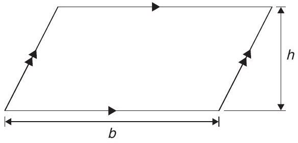
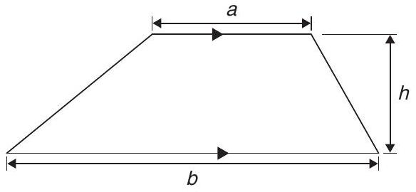
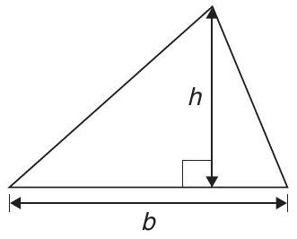
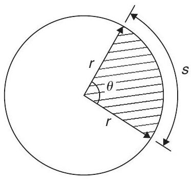
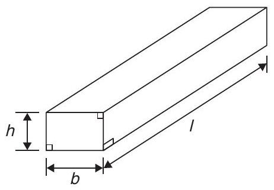
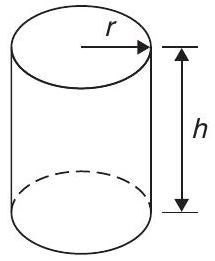
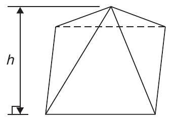
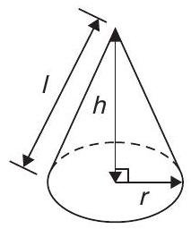
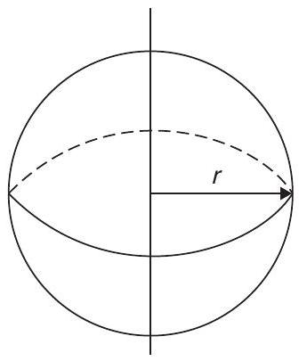
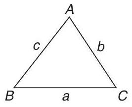

List of formulae
Formulae
Laws of indices:
Quadratic formula:
If $a x^{2}+b x+c=0 \quad$ then $\quad x=\frac{-b \pm \sqrt{b^{2}-4 a c}}{2 a}$
Equation of a straight line:
Definition of a logarithm:
If $y=a^{x} \quad$ then $\quad x=\log _{a} y$
Laws of logarithms:
Exponential series:
Theorem of Pythagoras:
Areas of plane figures:
- Rectangle Area $=l \times b$ 
- Parallelogram Area $=b \times h$ 
- Trapezium Area $=\frac{1}{2}(a+b) h$ 
- Triangle Area $=\frac{1}{2} \times b \times h$
- Circle Area $=\pi r^{2}$ Circumference $=2 \pi r$ 

Radian measure:
$2 \pi$ radians $=360$ degrees
For a sector of circle:
arc length, $s=\frac{\theta^{\circ}}{360}(2 \pi r)=r \theta \quad(\theta \text { in rad })$
shaded area $=\frac{\theta^{\circ}}{360}\left(\pi r^{2}\right)=\frac{1}{2} r^{2} \theta \quad(\theta \text { in rad })$
Equation of a circle, centre at origin, radius $r$:
Equation of a circle, centre at $(a, b)$, radius $r$:
Volumes and surface areas of regular solids:
- Rectangular prism (or cuboid)
- Cylinder
- Pyramid
- Cone
- Sphere
Volume $=l \times b \times h$
Surface area $=2(b h+h l+l b)$
Volume $=\pi r^{2} h$
Total surface area $=2 \pi r h+2 \pi r^{2}$
If area of base $=A$ and perpendicular height $=h$ then: Volume $=\frac{1}{3} \times A \times h$
Total surface area = sum of areas of triangles forming sides + area of base
Volume $=\frac{1}{3} \pi r^{2} h$
Curved Surface area $=\pi r l$
Total Surface area $=\pi r l+\pi r^{2}$
Volume $=\frac{4}{3} \pi r^{3}$
Surface area $=4 \pi r^{2}$

Areas of irregular figures by approximate methods:
Trapezoidal rule
Mid-ordinate rule
Area $\approx$ (width of interval)(sum of mid-ordinates)
Simpson's rule
Mean or average value of a waveform:
Triangle formulae:
Sine rule: $\frac{a}{\sin A}=\frac{b}{\sin B}=\frac{c}{\sin C}$
Cosine rule: $\quad a^{2}=b^{2}+c^{2}-2 b c \cos A$
Area of any triangle
For a general sinusoidal function $y=A \sin (\omega t \pm \alpha)$, then
- $A=$ amplitude
- $\omega=$ angular velocity $=2 \pi f \mathrm{rad} / \mathrm{s}$
- $\frac{\omega}{2 \pi}=$ frequency, $f$ hertz
- $\frac{2 \pi}{\omega}=$ periodic time $T$ seconds
- $\alpha=$ angle of lead or lag (compared with $y=\mathrm{A} \sin \omega t$)
Cartesian and polar co-ordinates:
If co-ordinate $(x, y)=(r, \theta)$ then $r=\sqrt{x^{2}+y^{2}}$ and $\theta=\tan ^{-1} \frac{y}{x}$
If co-ordinate $(r, \theta)=(x, y)$ then $x=r \cos \theta \quad \text { and } \quad y=r \sin \theta$
Arithmetic progression:
If $a=$ first term and $d=$ common difference, then the arithmetic progression is: $a, a+d, a+2 d, \ldots$
The $n$'th term is: $a+(n-1) d$
Sum of $n$ terms, $S_{n}=\frac{n}{2}[2 a+(n-1) d]$
Geometric progression:
If $a=$ first term and $r=$ common ratio, then the geometric progression is: $a, a r, a r^{2}, \ldots$
The $n$'th term is: $a r^{n-1}$
Sum of $n$ terms, $S_{n}=\frac{a\left(1-r^{n}\right)}{(1-r)}$ or $\frac{a\left(r^{n}-1\right)}{(r-1)}$
If $-1 Discrete data: $\text{mean, } \bar{x}=\frac{\sum x}{n} \quad \text{standard deviation, } \sigma=\sqrt{\left[\frac{\sum(x-\bar{x})^{2}}{n}\right]}$ Grouped data: $\text{mean, } \bar{x}=\frac{\sum f x}{\sum f} \quad \text{standard deviation, } \sigma=\sqrt{\left[\frac{\sum\left\{f(x-\bar{x})^{2}\right\}}{\sum f}\right]}$Statistics:
Standard derivatives
$\boldsymbol{y}$ or $\boldsymbol{f}(\boldsymbol{x})$ $\frac{\boldsymbol{d} \boldsymbol{y}}{\boldsymbol{d} \boldsymbol{x}}=$ or $\boldsymbol{f}^{\prime}(\boldsymbol{x})$ $a x^{n}$ $a n x^{n-1}$ $\sin a x$ $a \cos a x$ $\cos a x$ $-a \sin a x$ $e^{a x}$ $a e^{a x}$ $\ln a x$ $\frac{1}{x}$ Standard integrals
$y$ $\int y d x$ $a x^{n}$ $a \frac{x^{n+1}}{n+1}+c$ (except when $n=-1$) $\cos a x$ $\frac{1}{a} \sin a x+c$ $\sin a x$ $-\frac{1}{a} \cos a x+c$ $e^{a x}$ $\frac{1}{a} e^{a x}+c$ $\frac{1}{x}$ $\ln x+c$